Multi Channel Classification and Clustering System
This project is maintained by OpenImageAnalysisGroup
prepare_datasets.sh command from the terminal. The script downloads and stores the needed data and libraries using the recommended naming and folder structure. The analysis can be started by navigating into a example subfolder, here the processing script has to be executed in a terminal.
| 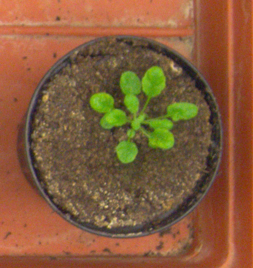 | 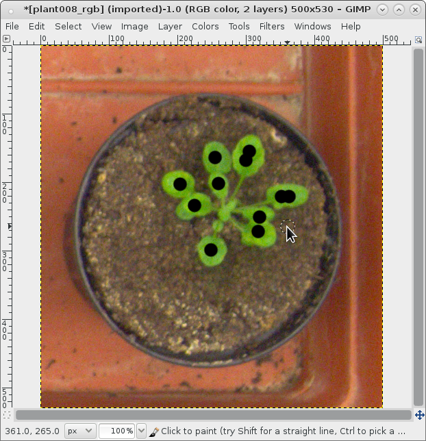 | 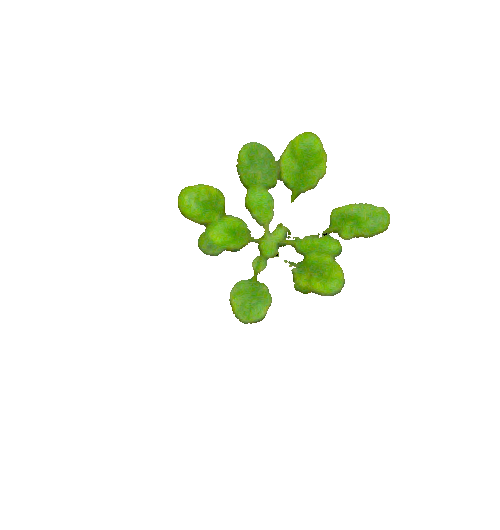 |
| Input image (source: LSC 2014) | Labeling foreground pixels (plant) during ground truth mask creation, by using gimp. | Classification result |
| Datasets | A1 | A2 | A3 |
| FGBGDice | 96.7 | 96.4 | 86.7 |
| 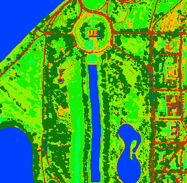 | 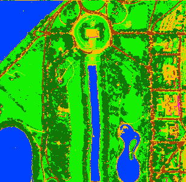 | |
| RGB visualization (data source: Purdue Research Foundation) | Clustering result (using 7 classes) | Classification result (using 7 ground truth masks for training) |
| 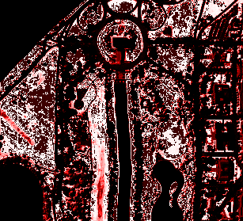 | 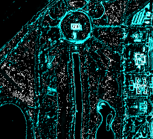 | 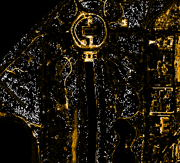 |
| Class 1 (vegetation, grass) | Class 2 (streets, trails) | Class 3 (buildings) |
| 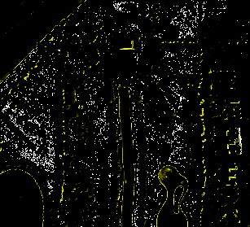 | 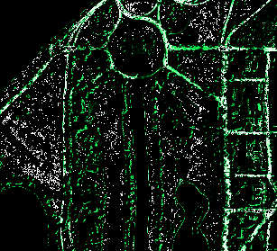 | 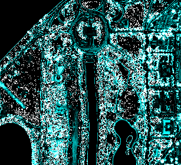 |
| Class 4 (shadows) | Class 5 (streets, trails) | Class 6 (vegetation, trees) |
| 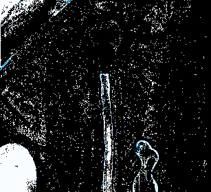 | ||
| Class 7 (water) |